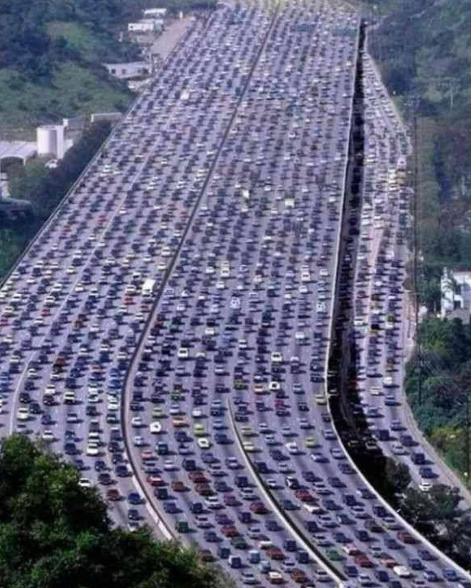
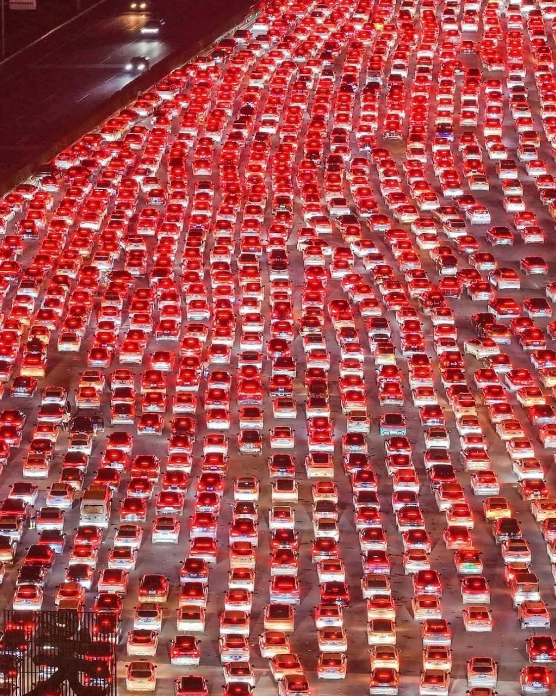
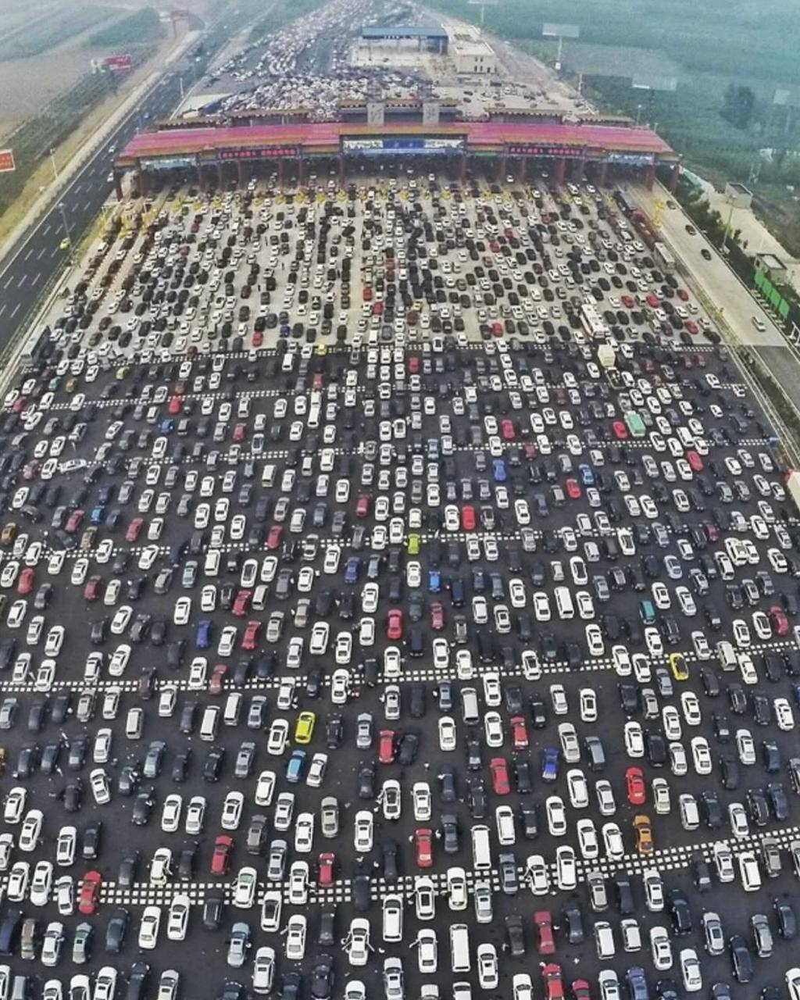
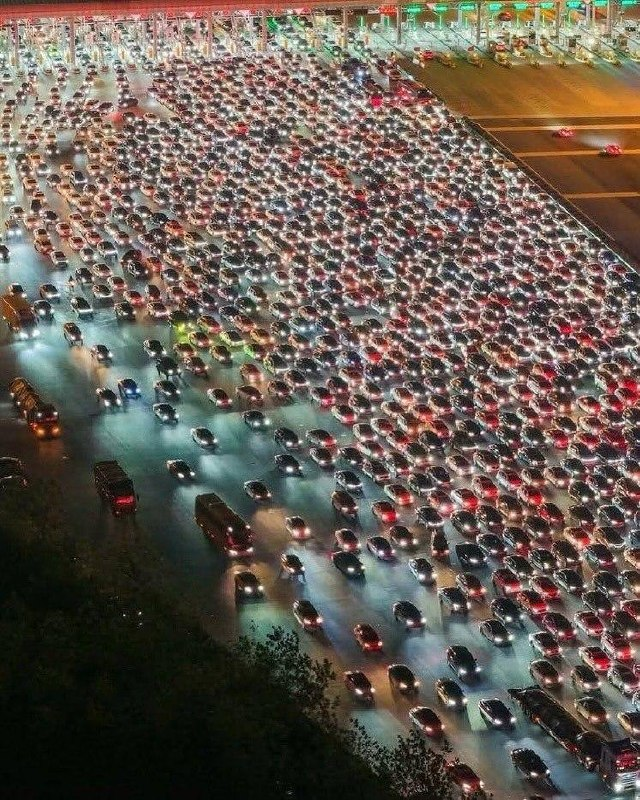
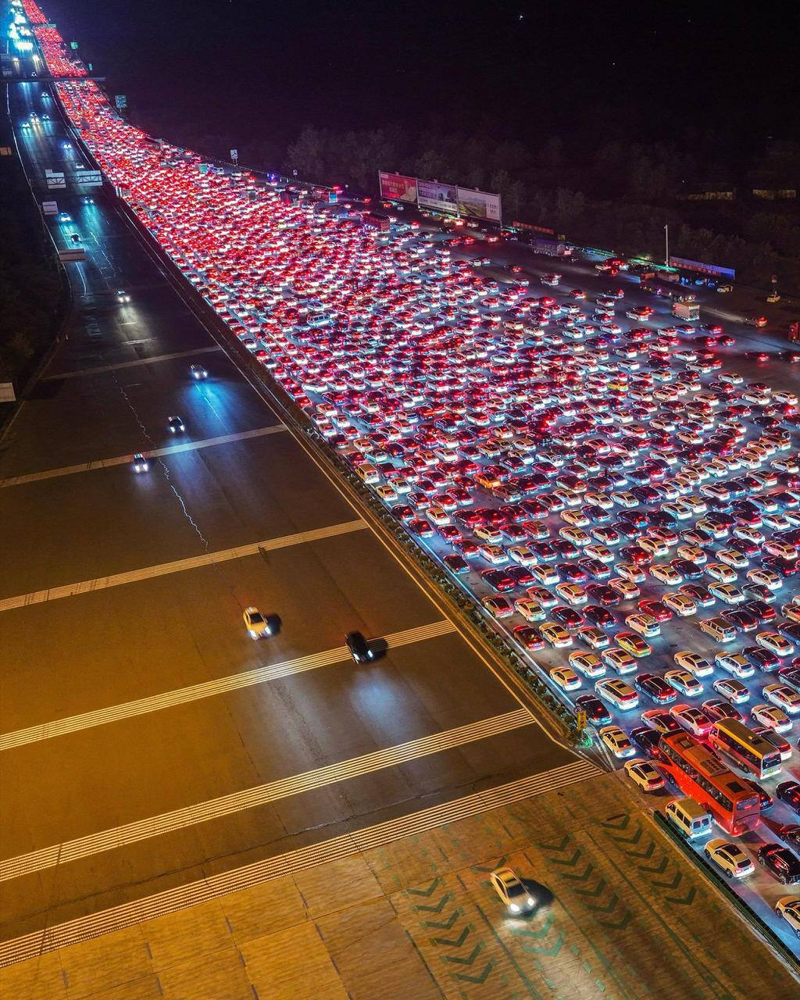
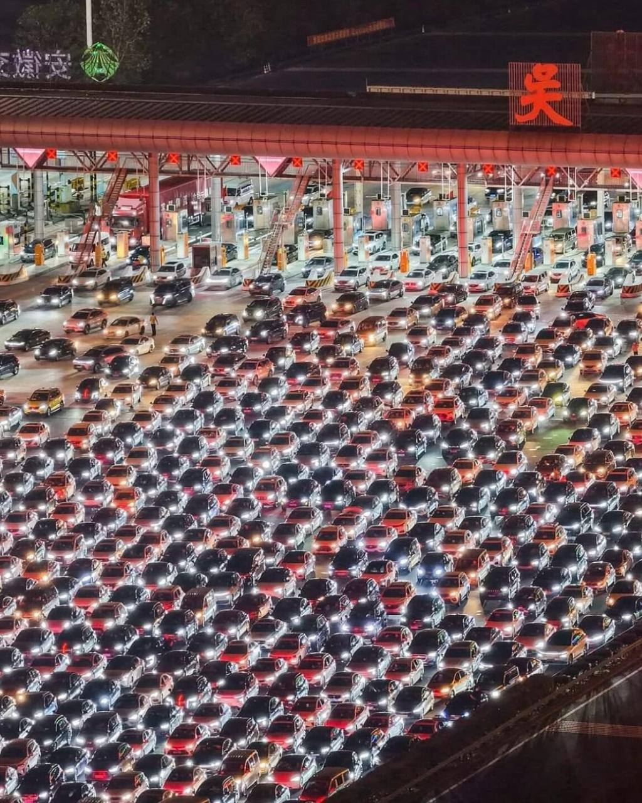

Тачки и Точка
@tachki
Тачки и Точка
@tachki
В Китае построили пункт оплаты аж на 36 ПОЛОС сам пункт растянулся почти на 200 метров и в праздники пропускает больше 120 тысяч машин в сутки.






В Китае построили пункт оплаты аж на 36 ПОЛОС — сам пункт растянулся почти на 200 метров и в праздники пропускает больше 120 тысяч машин в сутки.
Но сразу после него 36 полос снова превращаются в четыре — весь поток буквально запихивают в одну огромную воронку.
В итоге в большие праздники водители могут провести в этой пробке почти сутки.
🚙 Тачки и Точка
Но сразу после него 36 полос снова превращаются в четыре — весь поток буквально запихивают в одну огромную воронку.
В итоге в большие праздники водители могут провести в этой пробке почти сутки.
🚙 Тачки и Точка